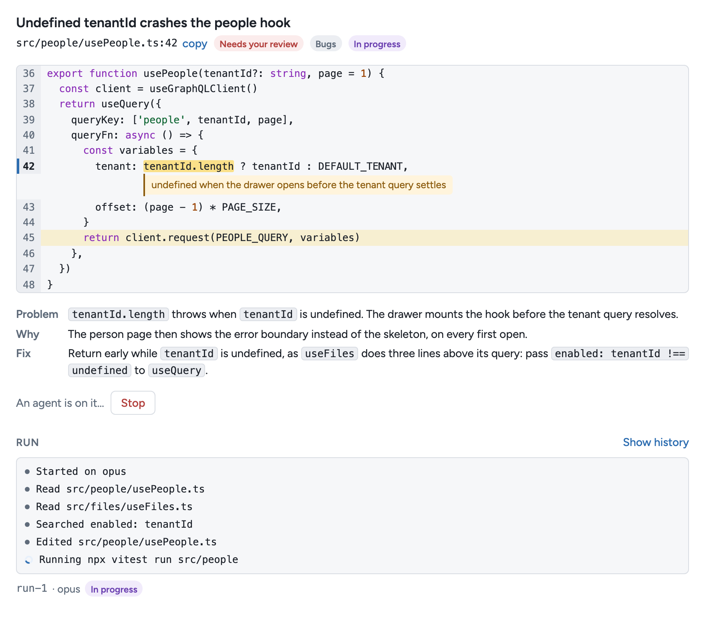

A Claude Code plugin: run
/tranchant review and Claude reviews your branch. Each finding shows on a
local page, with the code it points at and why it matters. Fix it, post it or drop it:
a background agent makes each fix on your working tree, and commits nothing.

From nothing to a first finding settled, in four steps.
claude --version,
and claude update when it is older.
node --version.glab logged
in. On GitHub, to reply on a pull request's threads or open an
issue: gh logged in.
Straight from GitHub, no clone needed:
claude plugin marketplace add annotant/tranchant#stable
claude plugin install tranchant@tranchantStart Claude Code in the repository, on the branch to review, and run:
/tranchant review
The page opens at once. Claude summarizes the change, one reviewer runs per
concern it touches (bugs, types, accessibility, security, tests…), and a verifier
confirms each finding as it lands. Someone else's GitLab merge request:
/tranchant review <merge request url>.
Open a finding, read the code it points at and why, then pick one of the six actions below. Or select several and act in one go. Each fix's agent reports under its finding; reply when it asks.
A background agent makes the change on your working tree, with the context you add. It commits nothing.
On a GitLab merge request, a comment on its line, as written or edited first, under your name.
Real, but not for this change: an issue prefilled from the finding, yours to edit first.
Ask an agent whether the finding holds before you decide.
With your reason, kept with the review.
And come back to it later.
/tranchant import; it runs beside Tranchant's
own.
~/.cache/tranchant, the page on 127.0.0.1.
/tranchant review/tranchant review <mr url>/tranchant comments/tranchant import/tranchant <review.json>/tranchant status/tranchant stopYour own review rules, the settings and troubleshooting: the full guide.